ایجاد یک droplet در DigitalOcean
اولین کاری که باید انجام دهیم این است که یک سرور در DigitalOcean برای میزبانی برنامه خود راهاندازی کنیم.
به طور دقیقتر، آنچه قرار است راهاندازی کنیم در واقع یک ماشین مجازی است که در اصطلاحات DigitalOcean به آن droplet گفته میشود.
اگر میخواهید در این مرحله از کتاب همراه ما باشید، باید اگر قبلاً حساب DigitalOcean ندارید، یک حساب DigitalOcean ثبت کنید. در فرآیند ثبتنام، از شما خواسته میشود آدرس ایمیل خود را تأیید کنید و سپس حداقل ۵ دلار اعتبار پیشپرداخت به حساب خود با استفاده از کارت اعتباری/دبیت یا PayPal اضافه کنید.
پس از تکمیل ثبتنام و اضافه کردن اعتبار، باید با پنل کنترل حساب خود مواجه شوید که ظاهری مشابه این خواهد داشت:
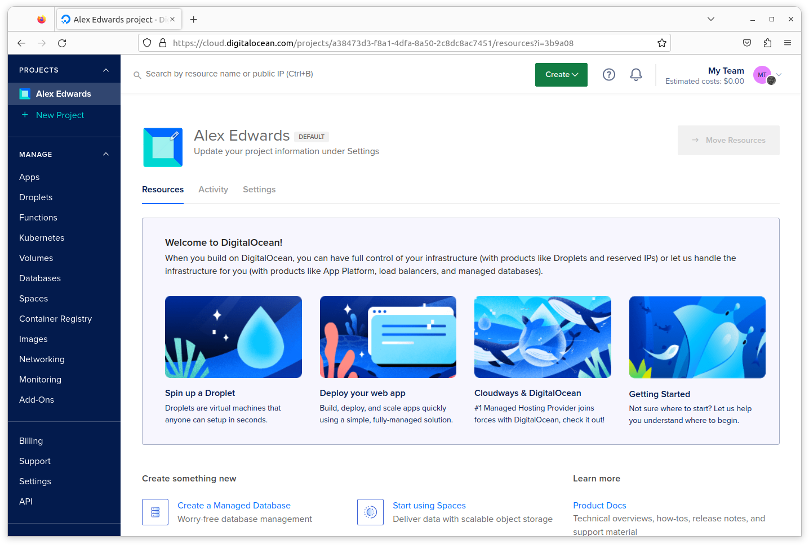
ایجاد یک کلید SSH
برای ورود به dropletها در حساب DigitalOcean خود به یک جفت کلید SSH نیاز دارید.
اگر قبلاً یک جفت کلید SSH دارید که میخواهید برای این هدف استفاده کنید، عالی است و میتوانید به بخش بعدی بروید.
اما اگر ندارید، باید با استفاده از دستور ssh-keygen روی ماشین محلی خود یک جفت کلید ایجاد کنید. مشابه این:
$ ssh-keygen -t rsa -b 4096 -C "greenlight@greenlight.alexedwards.net" -f $HOME/.ssh/id_rsa_greenlight Generating public/private rsa key pair. Enter passphrase (empty for no passphrase): Enter same passphrase again: Your identification has been saved in /home/alex/.ssh/id_rsa_greenlight Your public key has been saved in /home/alex/.ssh/id_rsa_greenlight.pub The key fingerprint is: SHA256:MXASjIyE1p2BAGZ70zkUV058rA65hm3sxdIcnWLGkwg greenlight@greenlight.alexedwards.net The key's randomart image is: +---[RSA 4096]----+ |o*+oo*Bo+o. | |+.oo=E++o. o | |.. o +. *.= . | | . . .+ % o | | + S + | | . B * | | + o | | . | | | +----[SHA256]-----+
این کار دو فایل جدید در پوشه $HOME/.ssh شما ایجاد میکند:
- فایل
$HOME/.ssh/id_rsa_greenlightشامل کلید خصوصی شماست. مطمئن شوید این فایل را ایمن نگه میدارید، زیرا هر کسی که به آن دسترسی داشته باشد میتواند هویت شما را جعل کند. - فایل
$HOME/.ssh/id_rsa_greenlight.pubشامل کلید عمومی شماست. ما یک نسخه از این کلید عمومی را به DigitalOcean آپلود خواهیم کرد.
اگر فایل کلید عمومی خود را در یک ویرایشگر متن باز کنید، باید محتوایی مشابه این ببینید (شکست خطوط برای خوانایی اضافه شده است):
ssh-rsa AAAAB3NzaC1yc2EAAAADAQABAAACAQDBheUdwyzUt056EsvUidpaGqL3zodDAffHbVVPPN7AJal5/oL6 hzmpPoCGIZueU3Fra2BPzrVtBTsNLOm0UwyQ3G8D474ETsWqlgtU3M3DBvdeI0sAaQdGxH8SkgUGswRUPNNzVG3V xvu5aOludfZ0J1kKEkS1PzWXRll2YoKlzSO42Ne0Gzo++ZdbQWl0Y/C0sLb2sBBviIxXHU8dXmp3823yUErqkWrF ZGGBhAco9t18gUe6MLei1+AyK+VHnRbCYvStrId7qExEs2dPzCmaEec01wCnLJ6LaRYZQnFpBRuzIZ9dTwwsJH+T cXGo87x8MRnGY6nKNVoz8lupbSyjxkHw3PBTfkelJh+tNKiFzxs8J8WiHDfJKzrKDDQVUGbE3TYZXddGSxvi+rv0 Sfrf85zgvPjRVa2E6tjTl6nD8CnC+3wlU/01gRjVxVtPx7B9n51f+k8n2vMm8UozAv6+YruE1zZoHRHw9IvPCEy3 5B4l6GJxWzAqzjTns7kJR3Qk+xzcu2jOAehc+Do8MMx+xegzOzlgRY3mbPx8jbB3L1WmjNF6vV2BrJR/NxKoRgTf nAQA44JaevaG4+KpbVZvkvSNoaI8uP6z8b5AptUHz/QO9Gc5M+n2EAPFjv/lNMN+0g5ZmMH8n6NpBXzP9Qmgujgn hsGP+GmI4ZgvuUgjTQ== greenlight@greenlight.alexedwards.net
و اگر دستور ssh-add -l را اجرا کنید، باید کلید SSH جدید خود را در خروجی ببینید، مشابه این:
$ ssh-add -l 4096 SHA256:MXASjIyE1p2BAGZ70zkUV058rA65hm3sxdIcnWLGkwg greenlight@greenlight.alexedwards.net (RSA)
اگر کلید خود را در لیست نمیبینید، لطفاً آن را به SSH agent خود اضافه کنید، به این صورت:
$ ssh-add $HOME/.ssh/id_rsa_greenlight Enter passphrase for /home/alex/.ssh/id_rsa_greenlight: Identity added: /home/alex/.ssh/id_rsa_greenlight (greenlight@greenlight.alexedwards.net)
اضافه کردن کلید SSH به DigitalOcean
حالا که یک جفت کلید SSH دارید که میتوانید استفاده کنید، به پنل کنترل DigitalOcean خود برگردید و به تب Settings › Security بروید.
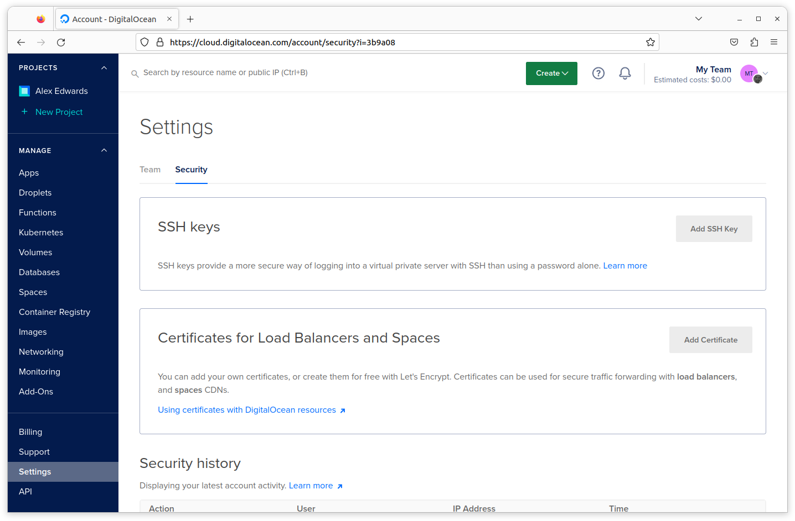
روی دکمه Add SSH Key کلیک کنید، سپس در پنجره بازشو که ظاهر میشود، متن فایل کلید عمومی $HOME/.ssh/id_rsa_greenlight.pub خود را وارد کنید، یک نام به یاد ماندنی به آن بدهید و فرم را ارسال کنید، مشابه اسکرینشات زیر.
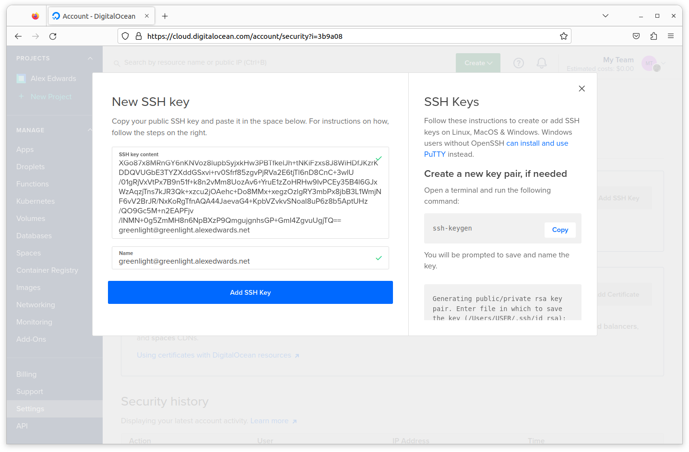
صفحه باید بهروز شود و تأیید کند که کلید SSH شما با موفقیت اضافه شده است، به این صورت:
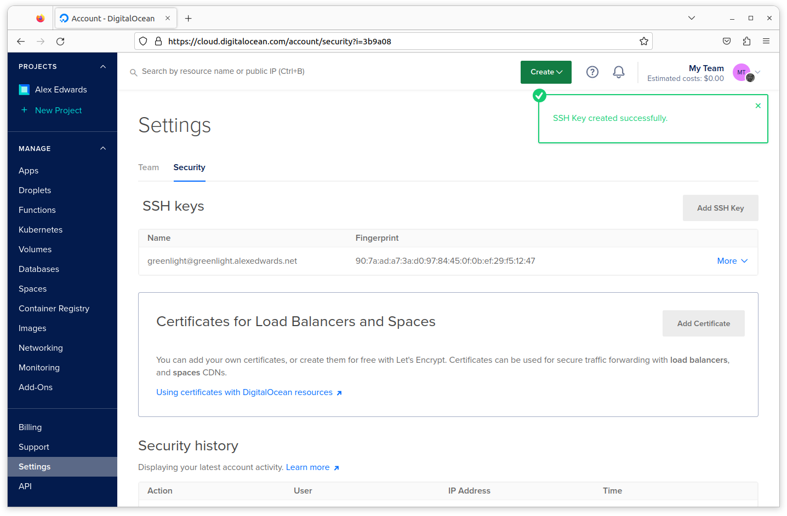
ایجاد یک droplet
حالا که یک کلید SSH معتبر به حساب خود اضافه کردهاید، زمان آن رسیده که واقعاً یک droplet ایجاد کنیم.
چند راه مختلف برای این کار وجود دارد. امکان انجام آن به صورت برنامهنویسی از طریق DigitalOcean API یا با استفاده از ابزار خط فرمان رسمی وجود دارد، و اگر نیاز به ایجاد یا مدیریت تعداد زیادی سرور دارید، توصیه میکنم از اینها استفاده کنید.
یا به جای آن، میتوانید یک droplet را به صورت دستی از طریق پنل کنترل خود در وبسایت DigitalOcean ایجاد کنید. این رویکردی است که در این کتاب استفاده خواهیم کرد، تا حدی به این دلیل که به عنوان یک کار یکباره به اندازه کافی ساده است، و تا حدی به این دلیل که دید کلی از تنظیمات droplet در دسترس را ارائه میدهد اگر قبلاً از DigitalOcean استفاده نکرده باشید.
روی دکمه سبز Create در گوشه بالا سمت راست کلیک کنید و Droplets را از منوی کشویی انتخاب کنید:
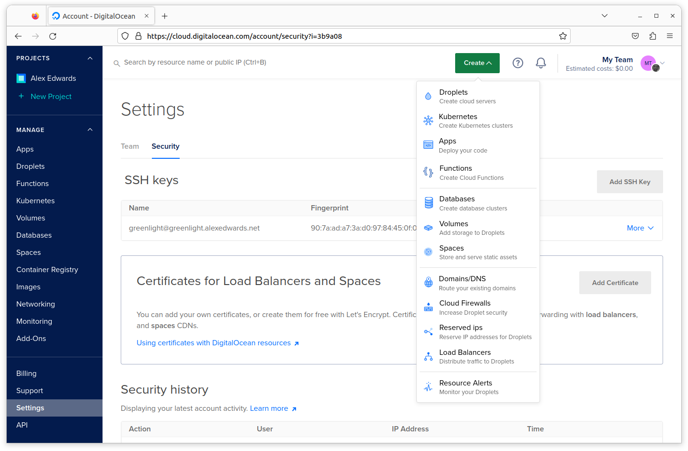
این شما را به صفحه گزینهها برای ایجاد یک droplet جدید میبرد. اولین چیزی که باید انتخاب کنید مرکز دادهای است که droplet شما به صورت فیزیکی در آن میزبانی خواهد شد. من Frankfurt را انتخاب میکنم، اما در صورت تمایل میتوانید مکان دیگری انتخاب کنید.
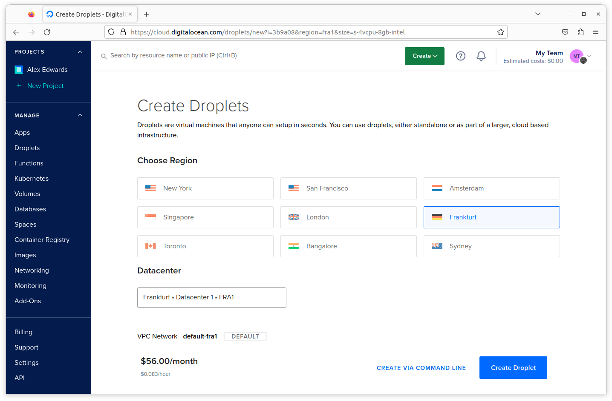
چیز بعدی که باید انتخاب کنید سیستمعامل برای droplet شماست. اگر همراه ما هستید، لطفاً Ubuntu 22.04 (LTS) x64 را انتخاب کنید.
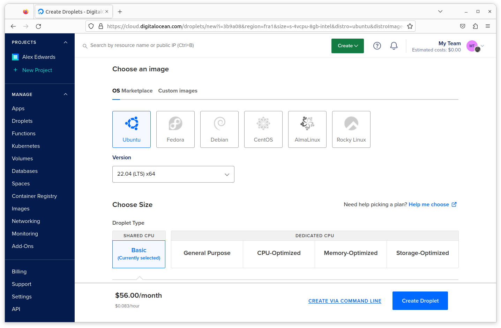
سپس باید یک plan انتخاب کنید که با مشخصات فنی مورد نیاز شما برای droplet مطابقت داشته باشد. در این مورد plan Basic Regular را با قیمت $4/month انتخاب خواهیم کرد، که به ما یک ماشین مجازی با 512MB RAM، 10GB فضای دیسک و 500GB انتقال داده خروجی در ماه میدهد (انتقال داده ورودی محدودیتی ندارد).
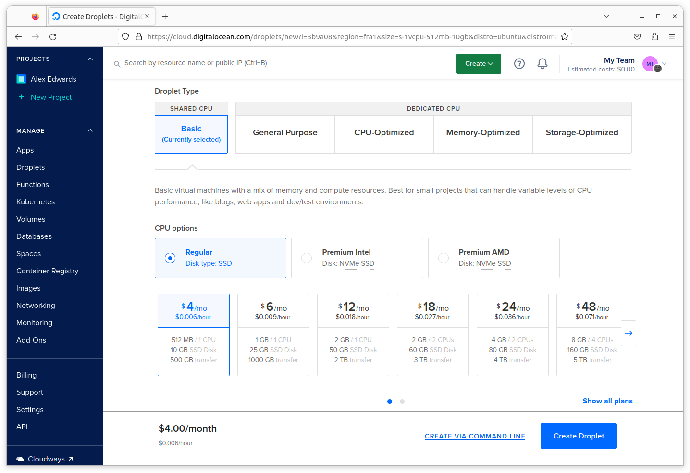
گزینه بعدی به ما امکان میدهد block storage به droplet اضافه کنیم. این در اصل یک volume ذخیرهسازی مستقل از droplet است که مانند یک هارد دیسک محلی عمل میکند و میتواند بین dropletهای مختلف جابجا شود. این چیزی نیست که الان نیاز داشته باشیم، بنابراین میتوانید این بخش را رد کنید.
در بخش Authentication Method، مطمئن شوید که SSH keys به عنوان روش احراز هویت انتخاب شده و کلید SSH که به تازگی آپلود کردهاید تیک خورده باشد.
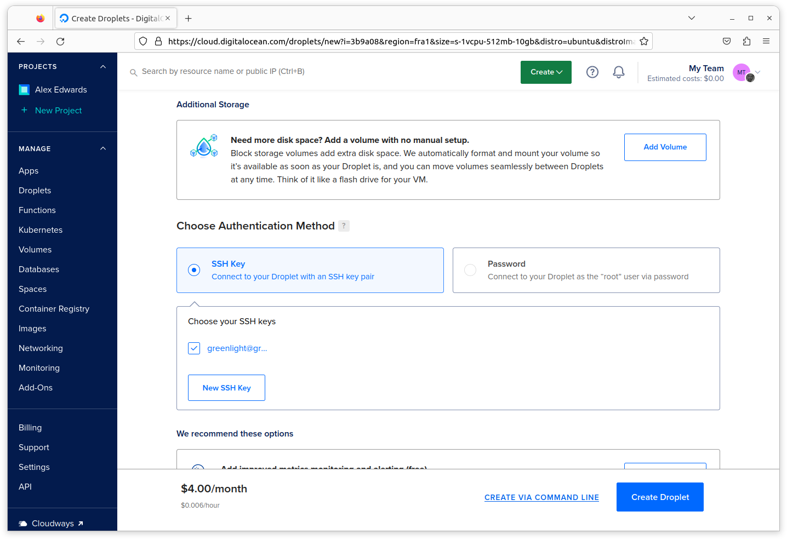
بعد از آن میتوانیم برخی از ویژگیهای «افزودنی» را برای droplet خود انتخاب کنیم. در مورد ما Monitoring را انتخاب خواهیم کرد، که به شما امکان میدهد بعداً نمودارهایی از آمار مختلف droplet (مانند CPU، حافظه و استفاده از دیسک) را در پنل کنترل DigitalOcean خود ببینید — و همچنین میتوانید هشدارهایی تنظیم کنید اگر استفاده از منابع از یک آستانه خاص فراتر رود.
همچنین میتوانید با پرداخت ۲۰٪ هزینه اضافی، droplet backups خودکار را فعال کنید. اگر این گزینه را انتخاب کنید، DigitalOcean هر هفته یک «اسنپشات» از droplet شما میگیرد و آن را به مدت ۴ هفته ذخیره میکند. سپس میتوانید در صورت نیاز، droplet را از طریق پنل کنترل به حالت اسنپشات بازگردانید. فعال کردن backups کاملاً به تصمیم شماست — اما یک شبکه ایمنی ساده و بدون دردسر است.
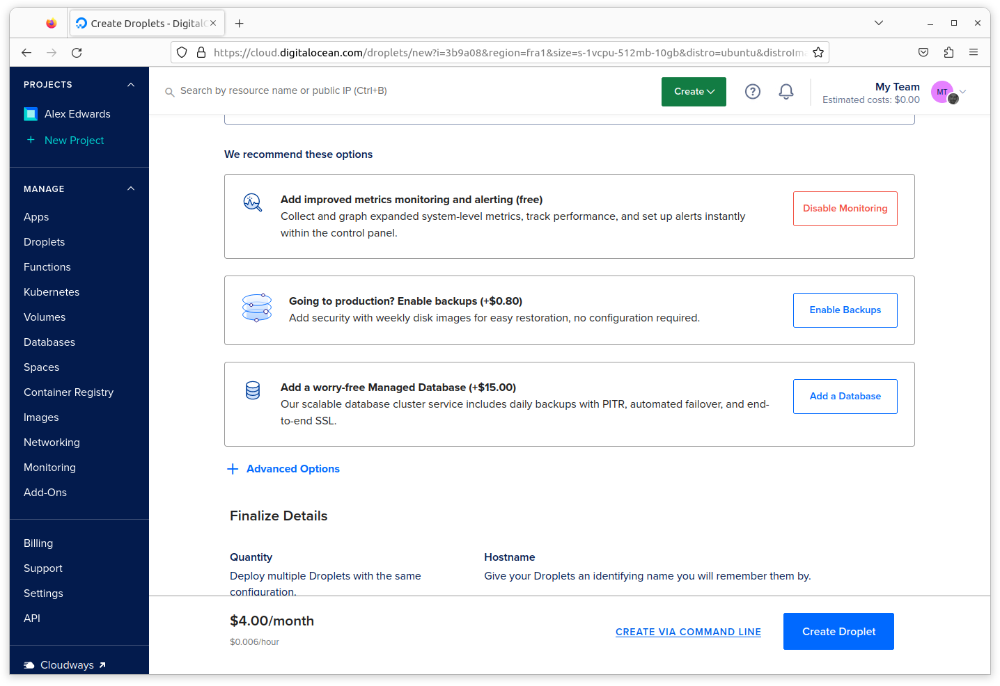
سپس به تنظیمات نهایی میرسیم.
الان فقط به یک droplet نیاز داریم، بنابراین میتوانید آن را به حالت پیشفرض بگذارید.
همچنین باید یک hostname برای droplet اضافه کنید. در میان سایر موارد، hostname به عنوان شناسه اصلی droplet در پنل کنترل DigitalOcean استفاده میشود و همچنین چیزی است که وقتی بعداً با SSH وارد droplet میشوید تا آن را مدیریت کنید خواهید دید. بنابراین باید نامی انتخاب کنید که منطقی و قابل تشخیص باشد. من از hostname greenlight-production استفاده خواهم کرد، اما در صورت تمایل میتوانید چیز متفاوتی استفاده کنید.
اضافه کردن tags به droplet شما کاملاً اختیاری است، اما اگر کار زیادی با DigitalOcean انجام میدهید، میتوانند راه مفیدی برای کمک به فیلتر کردن و مدیریت dropletها باشند. من از تگهای greenlight و production استفاده خواهم کرد.
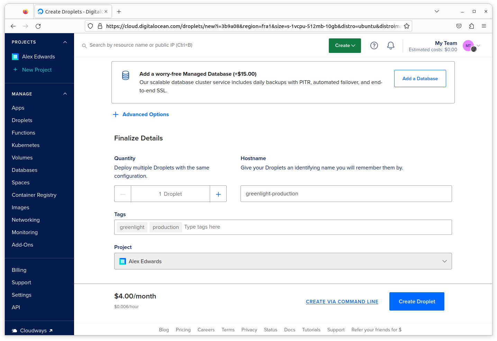
وقتی همه چیز تنظیم شد، روی دکمه Create Droplet در پایین صفحه کلیک کنید. باید یک نوار پیشرفت ببینید در حالی که droplet برای شما در حال راهاندازی است، و پس از یکی دو دقیقه droplet باید فعال و آماده استفاده باشد.
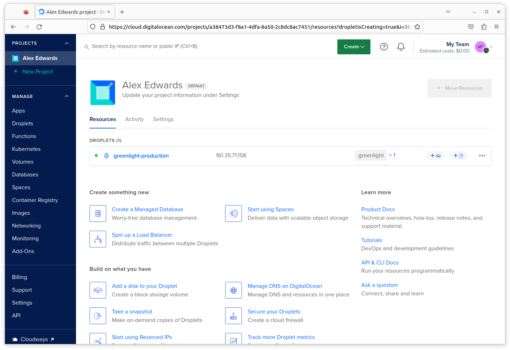
مهمترین چیز در این مرحله توجه به آدرس IP برای droplet است، که در مورد من 161.35.71.158 است.
در صورت تمایل، میتوانید روی hostname droplet کلیک کنید تا اطلاعات دقیقتری درباره droplet ببینید (شامل آمار monitoring) و هرگونه تغییر پیکربندی و مدیریت دیگری را در صورت نیاز اعمال کنید.
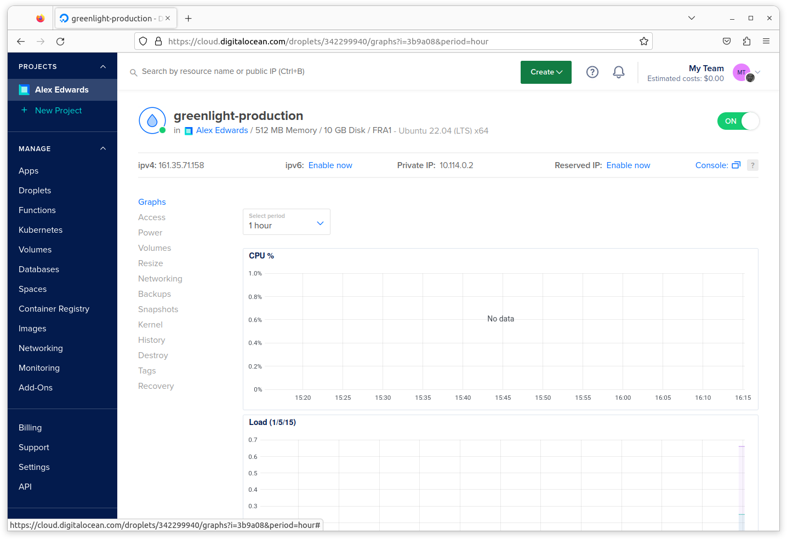
خب، حالا که droplet راهاندازی شده، زمان لحظه حقیقت فرا رسیده است!
یک پنجره ترمینال جدید باز کنید و سعی کنید از طریق SSH به عنوان کاربر root با استفاده از آدرس IP droplet متصل شوید. به این صورت…
$ ssh root@161.35.71.158 The authenticity of host '161.35.71.158 (161.35.71.158)' can't be established. ED25519 key fingerprint is SHA256:pBVp+W/Sb/BZkQy5JnsGQ0+QOr6clTtB3CFoEOFPKTk. This key is not known by any other names Are you sure you want to continue connecting (yes/no/[fingerprint])? yes Warning: Permanently added '161.35.71.158' (ED25519) to the list of known hosts. Welcome to Ubuntu 22.04.1 LTS (GNU/Linux 5.15.0-50-generic x86_64) * Documentation: https://help.ubuntu.com * Management: https://landscape.canonical.com * Support: https://ubuntu.com/advantage System information as of Thu Feb 23 15:17:11 UTC 2023 System load: 0.05615234375 Users logged in: 0 Usage of /: 16.8% of 9.51GB IPv4 address for eth0: 161.35.71.158 Memory usage: 43% IPv4 address for eth0: 10.19.0.5 Swap usage: 0% IPv4 address for eth1: 10.114.0.2 Processes: 105 112 updates can be applied immediately. 66 of these updates are standard security updates. To see these additional updates run: apt list --upgradable The programs included with the Ubuntu system are free software; the exact distribution terms for each program are described in the individual files in /usr/share/doc/*/copyright. Ubuntu comes with ABSOLUTELY NO WARRANTY, to the extent permitted by applicable law root@greenlight-production:~#
عالی به نظر میرسد که خوب کار میکند. droplet Ubuntu Linux ما فعال و در حال اجراست و ما توانستهایم با موفقیت به عنوان کاربر root از طریق SSH به آن متصل شویم.
میتوانید exit را تایپ کنید تا اتصال SSH را قطع کرده و به ترمینال ماشین محلی خود برگردید، به این صورت:
root@greenlight-production:~# exit logout Connection to 161.35.71.158 closed.